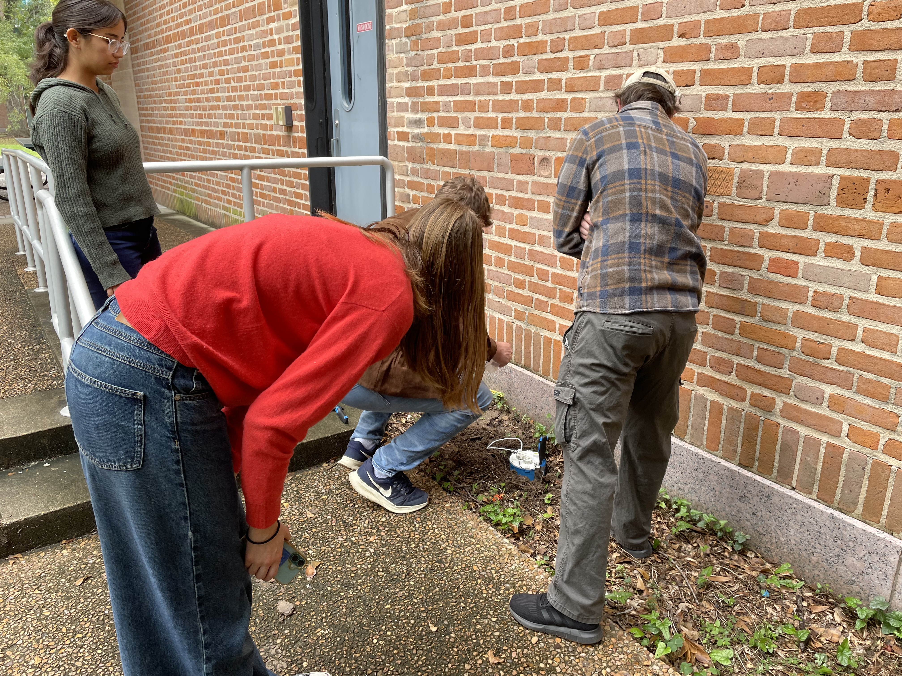
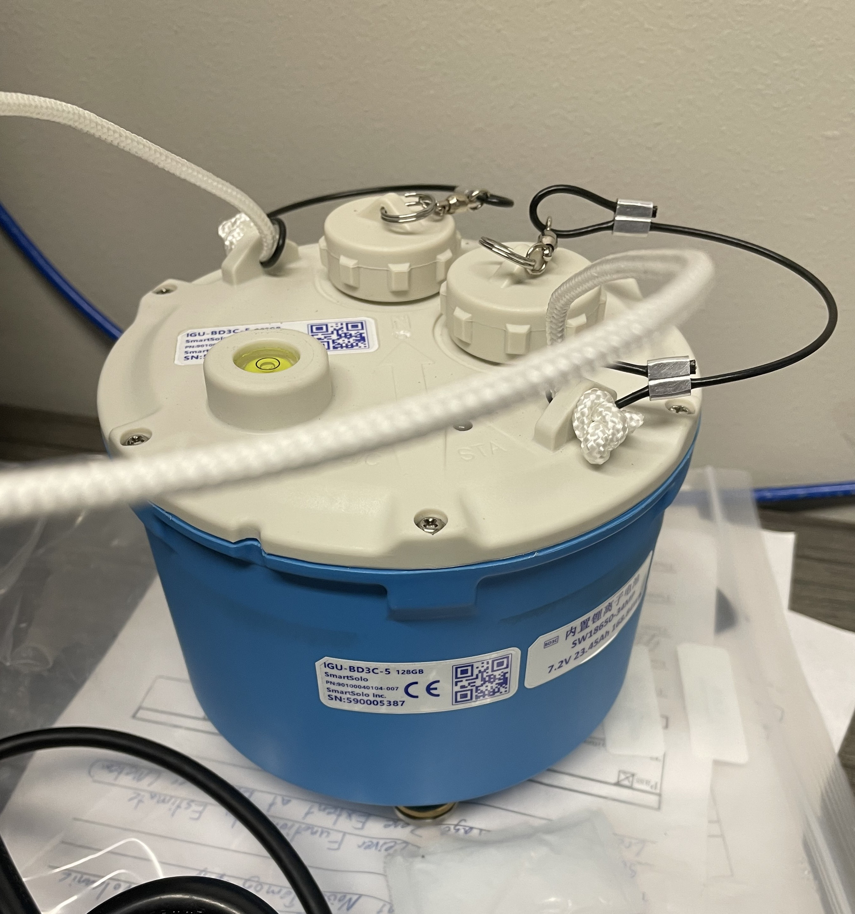
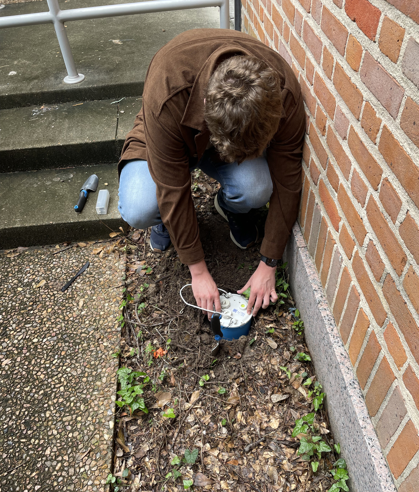

← Back to Albums
In November 2026, I helped guide students from the Seismology I course through the deployment of seismic nodes around KWGL building on Rice University campus, providing hands-on instruction and field experience in seismic data acquisition.


